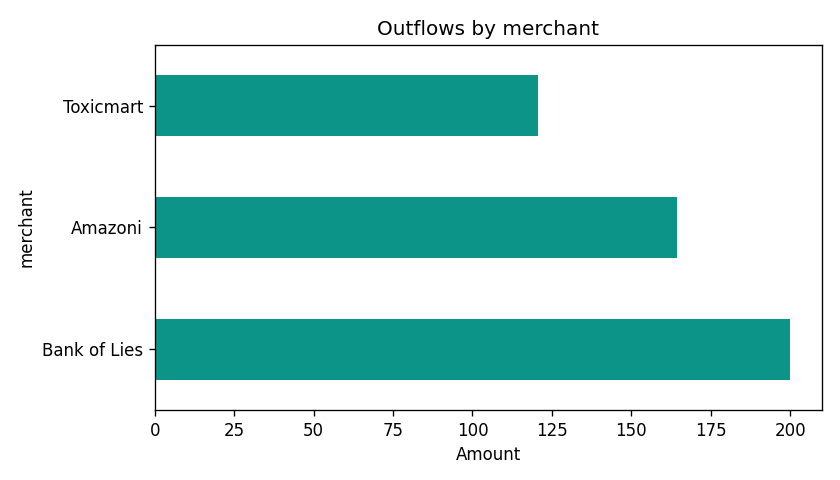

Fictional bank — COBOL transactions & Python spending views
A minimal COBOL program simulates deposits, purchases, and withdrawals, writes rows to transactions.csv,
and a small pandas script turns that file into category and merchant totals — bridging a legacy-style data feed with everyday analytics.
What this demonstrates
- Batch-style transaction lines with merchant and category fields (fixed-width padding from COBOL).
- Cleaning and typing in Python: strip strings, parse amounts and dates.
- Outflow-focused views: purchases and withdrawals summarized by category and merchant.
Charts (from spending_analysis.py)


The sample has only four rows — enough to prove the pipeline. A larger run would make the charts more meaningful for “habits” storytelling.